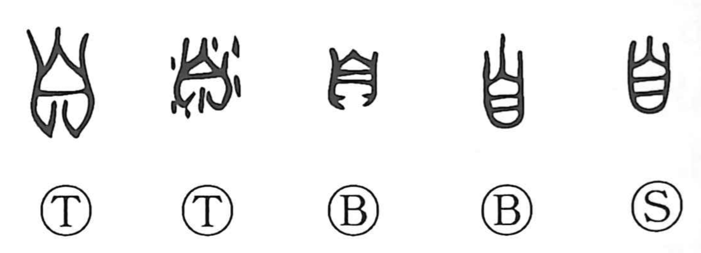

自

Kun: mizukara, onore, onozukara | On: ji, shi
self ・ oneself ・ from
Explanation
自 pictures a nose seen from the front. The early outline marks the ridge and surrounding shape of the organ, which was its original meaning.
People apparently pointed to or touched their own nose when referring to themselves. This gesture connects the bodily sign with ‘I,’ ‘oneself,’ and acting personally. As that use became established, 鼻 was formed to distinguish the organ: 自 remains above 畀, a phonetic associated with the sound of nasal breathing.
自 also describes something arising of itself, without another person's intervention. As a grammatical word it marks a point of departure, ‘from’ a place, time, or source. The self-reference and these wider uses continue beyond the original anatomical picture.